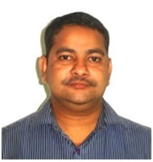
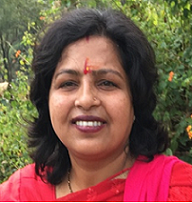
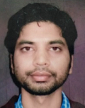

The deteriorating conditions of primary and elementary education systems in the rural areas of our country are a well-accepted fact. Education has been characterized by a high pupil-teacher ratio, teacher absenteeism, poor teaching and learning atmosphere, poor school infrastructure, no camaraderie between the community and school, high drop-out rates, etc. A large number of studies conducted by different organizations in different parts of the country reflect this situation. With little regulation and the demand for "quality of education", the private sector has stepped in rural areas. However, they have lack of expertise in the education field and they do not have basic infrastructure and vision to provide the quality education which is at par with the urban area. World class facilities like swimming pool, playgrounds, coaches etc. also need attention in rural areas. The contention made by the rural mass is that if they are paying a fee, they will probably receive quality education. A number of schools have sprung up but then such schools are just not accountable and open and close each year. They make the decision on market conditions in the area and profitability rather than 'education'. Their performance is marginally better than the government run schools but it is still far from providing quality education. Teachers at these schools are usually unemployed graduates (or even less) who themselves represent everything that is wrong with the education system.
Providing access and quality education are the two important aspects for any education administration. Quality education however remains the issue and is still out of reach of the majority of the rural mass. More importantly, in the absence of good quality efforts, communities are not even sure of what to demand in terms of quality. Yet their search continues. Therefore, to start with a mission, Prabha Education Trust has taken the initiatives to start the quality education in the rural area of Assam especially in the border area of Assam and Arunachal Pradesh. To start with, the Trust has selected its first project in Silapathar, District Dhemaji, which is a census town. It is well located at the border of Arunachal Pradesh, a strategic frontier of INDIA. It is inhabited by heterogeneous population of tribal, Ahom, Sutiyas, Bodo, Sonwal, Kachari, Mising and other tribal groups of Arunachal Pradesh such as Galo and Adi along with non tribals such as Nepali, Hindi speaking, Punjabi, Bengali. Recently INDIAN ARMY Cantonment board is about to get established with near about 1000 household. This strategic area lacks quality education and infrastructure which can sustain the changing demographic demands.
Prabha Education Trust (a national level trust) was formed on 15/02/2018 by 5 partners with similar vision to improve the quality of education in rural areas. Looking in to the education background of the trustee, it is very much evident that trust will excel in its vision and mission to improve the quality of the education of the rural area.
Trustees

Dr. Mukesh Singh
(President and Managing Trustee)
Associate Professor
Electrical and Instrumentation Engineering Department,
Thapar Institute of Engineering & Technology, Patiala, India
Dr. Singh received the B.E. in electrical engineering from the Birsa Institute of Technology, Sindri, India, in 2000; the M.E. degree in power systems from the Walchand College of Engineering, Sangli, India, in 2008; and the Ph.D. degree in Smart Grid from the Indian Institute of Technology, Guwahati, India, in 2012.
Dr. Singh has about 10 years of teaching and 2 year of industrial experience. He is currently working as Associate Professor in the Department of Electrical and Instrumentation Engineering, Thapar Institute of Engineering and Technology, Patiala, India. He has been awarded best teacher for teaching in Engineering Institution. He is member of various professional bodies such as IEEE and ISTE. He has published many research papers in several top-tier conferences and journals. He is presently handling the projects from DST and CSIR worth Rs. 2 crores. He is also the reviewer of many IEEE Transactions. His research interests include flexible ac transmission systems, distributed generation, smart grid, vehicle-to-grid, renewable energy sources, and distributed generation. At present, he is handling project worth Rs. 16 crores sanctioned by DHI, DST and CSIR. Moreover, he has held various academic positions in the present institute such as overall co-ordinator for ABET accreditation and satellite development. His keen interest is to serve the society by actively participating in transfer of quality education to the people.
Dr Ramesh Chandra Mishra
(Managing Trustee)
Assistant Professor
Electronics and Communication Department,
IIIT, Manipur, India
Dr. Mishra has done his PhD from IIT Guwahati and has published many journal papers in India and abroad. He has visited many countries to present his papers. Presently he is working as an Assistant Professor at IIIT Manipur. Prior to his PhD, he has 15 years of teaching in the Engineering college and he has hold many prime position in his previous institute. He is good as an administrator and important person in this trust.

Sanju Kumari Singh
(Managing Trustee)
A Research Scholar
Ms. Sanju Kumari Singh has done her BE from Computer Science and engineering from College of engineering Pandharpur. She did her M Tech in Information Technology from RGPV Bhopal. She is having a teaching experience of nearly 2 years. Presently she is doing her PhD from TIET, Patiala. She is very sincere in taking any goal and achieves in the given time frame.
Mr. Rishu Kumar Singh
(Managing Trustee)
IAS- Aspirant
Mr. Rishu Kumar Singh has done my B E in engineering (electronics and telecommunication), from Solapur University. Thereafter, he has been preparing for civil services exam. In mean time , he has mentored student for various competitive exams. He has a deep interest in transforming society through value based education.

Mr. Vivek Chaudhary
(Managing Trustee)
An Entrepreneur
Mr. Vivek Chaudhary has done is Engineering in Civil from Solapur University and Masters of Engineering from Walchand College of Engineerig, Sangli, Maharstara. He has been keen in deploying current technology in developing a new infrastructure. He is playing a lead role in transforming the value education in the society.